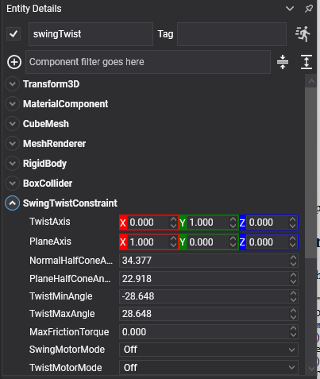

Swing Twist Constraint
A swing twist constraint is the anatomical joint: a ball joint that limits how far it may bend (swing) and how far it may rotate about its own axis (twist), each separately, and with a different limit in each swing direction.
It is what ragdolls are built from. Shoulders, hips, necks and wrists all bend further one way than another and all have a limit to how far they may screw round, and a swing twist constraint is the only one that can express all of that at once.
Note
This replaces the ConeTwistJoint3D of the previous API, with the two swing directions now limited independently.
SwingTwistConstraint Component

Entity upperArm = new Entity("upperArm")
.AddComponent(new Transform3D() { Position = shoulder })
.AddComponent(new RigidBody())
.AddComponent(new CapsuleCollider() { Radius = 0.08f, Height = 0.34f })
.AddComponent(new SwingTwistConstraint()
{
ConnectedEntityPath = "torso",
Anchor = new Vector3(0f, 0.17f, 0f),
TwistAxis = Vector3.UnitY,
PlaneAxis = Vector3.UnitX,
// A shoulder: a wide swing forwards and back, less to the side, and very little screw.
NormalHalfConeAngle = MathHelper.ToRadians(75f),
PlaneHalfConeAngle = MathHelper.ToRadians(45f),
TwistMinAngle = MathHelper.ToRadians(-30f),
TwistMaxAngle = MathHelper.ToRadians(30f),
});
this.Managers.EntityManager.Add(upperArm);
Axis and Limit Properties
| Property | Default | Description |
|---|---|---|
| TwistAxis | 0,1,0 | The axis the joint twists about, and the centre of the swing cone. For a limb, this points down the bone. |
| PlaneAxis | 1,0,0 | A reference direction perpendicular to TwistAxis, which fixes which way "plane" means. |
| NormalHalfConeAngle | π/4 | How far the joint may swing perpendicular to the plane axis, in radians. |
| PlaneHalfConeAngle | π/4 | How far it may swing in the plane, in radians. Two different half angles are what make the swing limit an ellipse rather than a circle. |
| TwistMinAngle | -π/4 | How far it may twist one way, in radians. |
| TwistMaxAngle | π/4 | How far the other way. |
| MaxFrictionTorque | 0 | Friction in the joint. A little of it is what stops a ragdoll's limbs swinging for ever. |
Motor Properties
| Property | Default | Description |
|---|---|---|
| SwingMotorMode | Off |
Drives the swing towards TargetOrientation or TargetAngularVelocity. |
| TwistMotorMode | Off |
Drives the twist the same way. The two are set separately. |
| TargetOrientation | identity | The orientation a position motor drives towards. |
| TargetAngularVelocity | 0,0,0 | The angular velocity a velocity motor drives towards. |
| MaxSwingTorque | 1000 | The strongest torque the swing motor may apply. |
| MaxTwistTorque | 1000 | The strongest torque the twist motor may apply. |
| MotorSpring | 20 Hz, damping 1 | How the position motor approaches its target. See Springs. |
| MotorTorque | read-only | How hard the motors are working right now. |
Plus the common properties.
Building a Ragdoll
This is the constraint a ragdoll is mostly made of: a swing twist at every hip, shoulder, waist and neck, with a hinge at the elbows and knees. The anchor goes in the child limb's own space, at the point where the two bones meet:
var shoulder = new SwingTwistConstraint()
{
ConnectedBody = torso.FindComponent<RigidBody>(),
Anchor = new Vector3(0f, 0.15f, 0f),
TwistAxis = Vector3.UnitY,
PlaneAxis = Vector3.UnitX,
PlaneHalfConeAngle = MathHelper.ToRadians(80f),
NormalHalfConeAngle = MathHelper.ToRadians(60f),
TwistMinAngle = MathHelper.ToRadians(-30f),
TwistMaxAngle = MathHelper.ToRadians(30f),
// Neighbouring bones overlap at the joint by design, so they must not collide: letting them means
// every joint fights a contact every step, and the figure blows itself apart on the first frame.
CollideConnected = false,
// A little friction everywhere. Without it a ragdoll dropped on the floor keeps twitching: every
// joint is a frictionless bearing, so nothing ever quite comes to rest.
MaxFrictionTorque = 0.5f,
};
See Ragdolls for the whole figure: the eleven bodies, their masses, the rules that decide whether it holds together, and how to switch a character from its animation to a ragdoll at run time.
Tip
Turn on RenderManager.DebugLines with PhysicsDebugFlags.Constraints while tuning a ragdoll. The swing cones and twist arcs are drawn in place, so a limit that is wrong is visible rather than merely suspicious. See Debug Rendering.